工作台管理
工作台模块是管理 AVA 平台提供的容器, 用户可以通过 JuypterLab 登录到容器, 进行编写代码, 修改训练参数, 查看日志等.
在 AVA 平台中用户可以根据需要启动 GPU 资源的容器（仍在开发中）或者 CPU 资源的容器. 启动一个容器就需要在 AVA 平台中创建一个工作台.
1. 创建工作台
在工作台模块, 点击 “新建工作台”, 可以创建一个 CPU 的容器用来调试代码, 修改训练参数, 或者查看其他训练和工作台的日志信息.
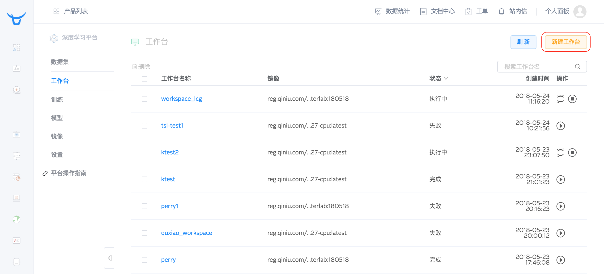
填写工作台名称
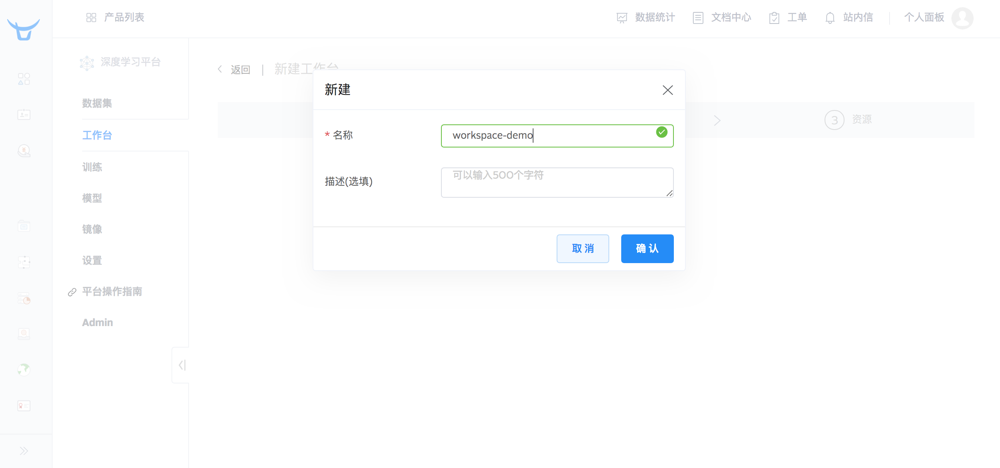
创建工作台的步骤与创建训练一样, 也是 3 步, 分别是
选择数据集
如果用户只是想启动一个容器来进行代码编写或者修改训练参数, 那么可以在第 1 步选择数据集中, 点击“跳过这一步>>”, 那么 AVA 平台就会为客户创建一个没有挂载任何数据集的容器；
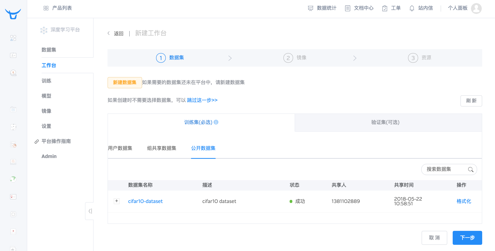
选择镜像
用户可以选择自己需要的镜像来启动容器进行调试.
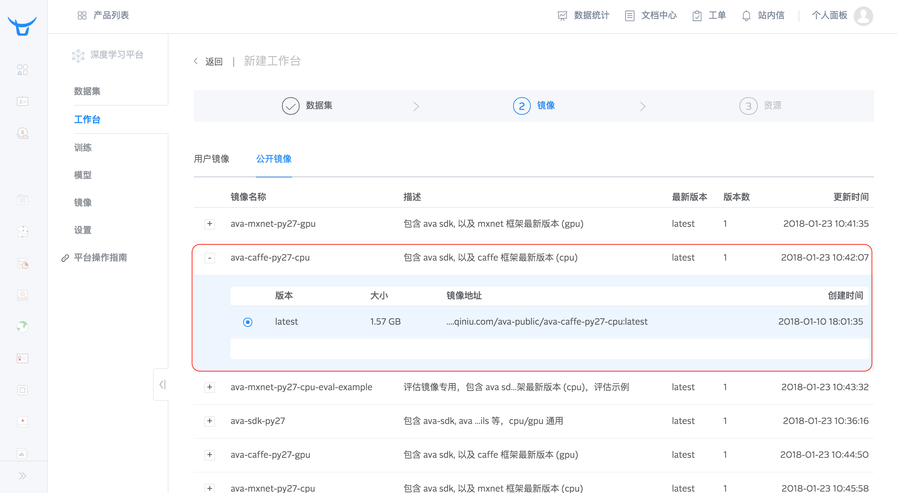
选择资源

工作台创建成功后, 可以在工作台列表中查看到这个工作台的状态, 如果启动成功后, 这个工作台的状态就处于“执行中”.
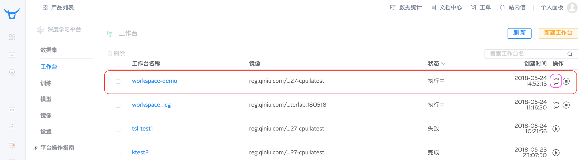
2. JuypterLab
找到你想进入的工作台, 点击上图紫色框出来的 JuypterLab 的图标, 打开 JupyterLab.
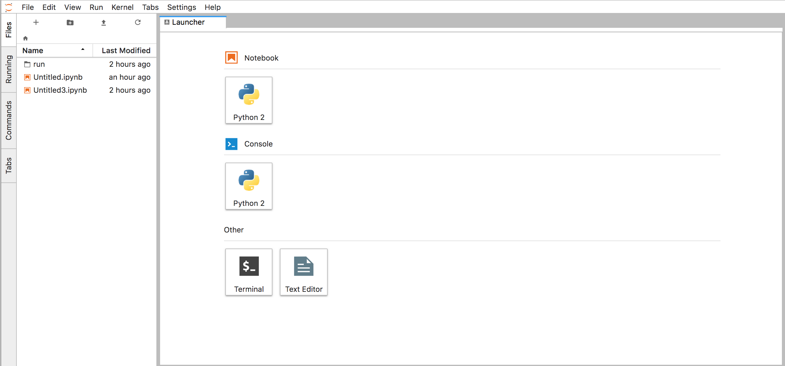
使用 JuypterLab 可以编写代码. 使用 JuypterLab 调试训练. 使用 JuypterLab 可以打开 Terminal, 进入到组共享存储目录中, 查看这个训练的 log, 例如:
在工作台中查看训练任务产生的 log (在
/workspace/mnt/group/[group_name]/[user_name]/run目录下) :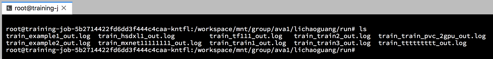
使用 Jupyter Notebook 调试 Python 代码:
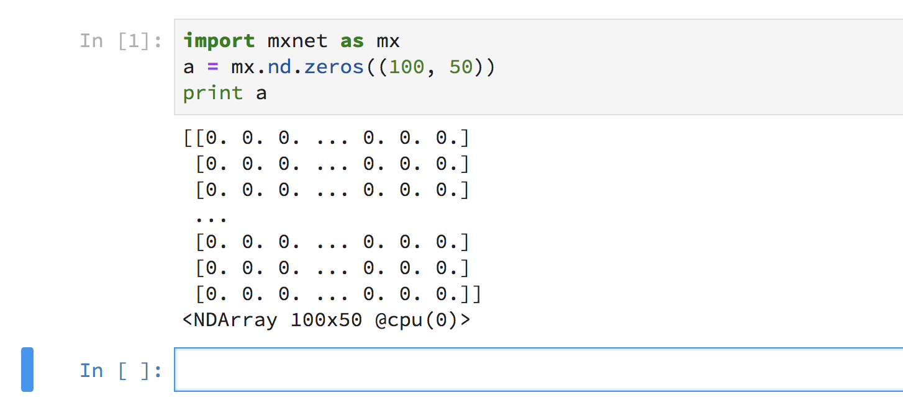
编辑 Markdown 文档:
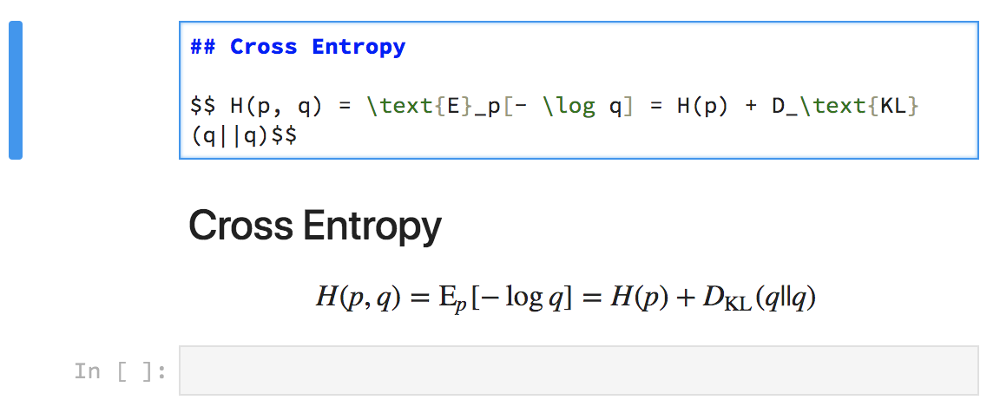
3. 终止工作台
每个工作台的生命周期不能超过 24 小时, 如果超过 24 小时, 平台会自动把这个工作台占用的资源释放. 已经保存在共享存储目录下的文件不会丢失. 当然, 用户也可以在使用完工作台之后, 手动终止工作台, 释放占用的资源.
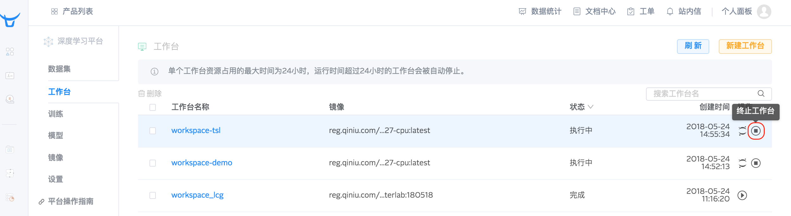
终止工作台之后, 那么这个工作台对应的容器就被关闭了, 也就不能再通过 JuypterLab 登录到容器中.
4. 启动工作台
对于已经终止的工作台, 如果用户还需要使用, 那么可以点击“启动工作台”的 icon,再次按照这个工作台的配置启动一个容器.
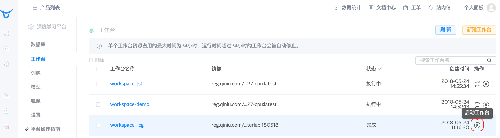
5. 查看工作台详情
对于 AVA 平台中的工作台, 用户可以点击工作台名称, 进入到工作台详情页面去查看工作台的详情信息. 具体包括容器使用的资源, 组共享存储资源目录, Bucket 目录, 以及挂载的数据集等.
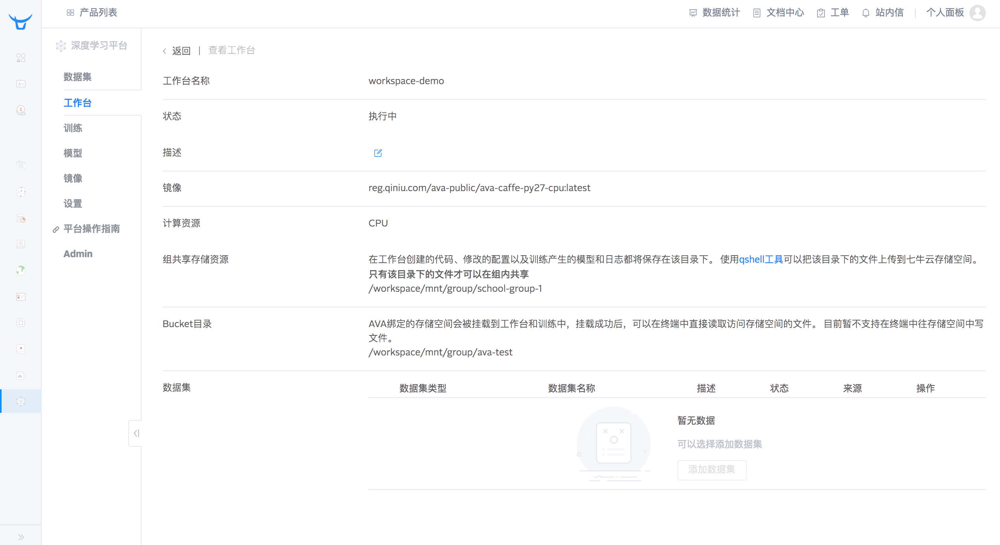
如果用户在调试的过程中, 需要更好使用的数据集, 只需先“终止工作台”, 使该工作台变成“完成”状态, 然后在工作台详情中更换数据集.